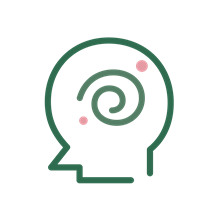
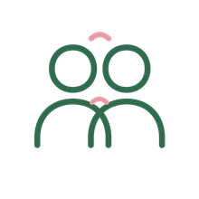
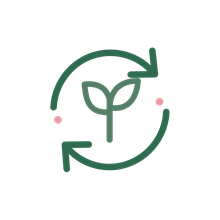
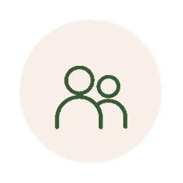
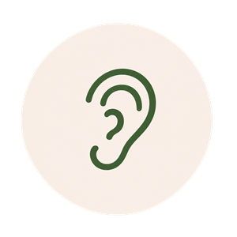

Você não precisa
lidar com tudo
sozinha.
Posso acompanhar você para olhar para si com mais profundidade, respeitando seu tempo e sua singularidade.
Você não precisa ter todas as respostas para começar uma trajetória.
Agende seu atendimentoTem algo ocupando espaço dentro de você?

Você sente que pensa demais e tem dificuldade para organizar o que sente?
Algumas situações te incomodam nos seus relacionamentos?
Está passando por mudanças e tentando entender como se sente?- Tem questões que gostaria de falar, mas não sabe por onde começar?
Compreenda o que está por trás do que você sente.
A psicanálise é um processo de escuta e investigação que busca compreender como suas experiências, emoções e relações influenciam a maneira como você vive hoje.
Ao falar sobre sua história, você pode reconhecer padrões que se repetem, entrar em contato com conflitos que ainda fazem parte da sua vida e compreender melhor suas reações e sentimentos.
Esse processo amplia o olhar sobre si mesmo e possibilita construir novas maneiras de lidar com suas questões, respeitando seu tempo e sua singularidade.
Um espaço para
olhar para si
Compreender o que senteSaiba mais
Encontrar palavras para experiências e sentimentos que nem sempre são fáceis de explicar.
Olhar para sua históriaSaiba mais
Explorar como experiências vividas participam da maneira como você se relaciona consigo e com outras pessoas.
Reconhecer padrõesSaiba mais
Investigar situações que se repetem e compreender melhor o lugar que ocupam na sua vida.
Construir novas perspectivasSaiba mais
Abrir espaço para perguntas, reflexões e outras formas de compreender suas experiências.
Cada processo é singular.
A psicanálise não oferece resultados iguais ou garantidos para todas as pessoas.
Começar pode ser
mais simples
Você não precisa saber exatamente o que dizer.
Primeiro contato
Você me chama pelo WhatsApp e conta, do seu jeito, o que está buscando.
Primeira conversa
Conversamos sobre sua demanda e esclareço suas dúvidas sobre o atendimento.

Início do acompanhamento
Nossos encontros se tornam um espaço para você falar sobre suas experiências e questões pessoais.

Processo de escuta
Nosso trabalho acontece ao longo do tempo, respeitando sua história e o ritmo do processo.
Prazer, sou
Fernanda
Rodrigues.
PSICANALISTA
Sou psicanalista e encontrei na psicanálise uma forma de compreender melhor a experiência humana e as histórias que cada pessoa carrega.
Minha própria experiência com o processo analítico despertou em mim o desejo de estudar essa área e fazer dela minha profissão.
Hoje, meu trabalho é oferecer um espaço de escuta cuidadosa, no qual você possa falar sobre suas questões com respeito e sem julgamentos.
Nem sempre é fácil dar nome ao que sentimos ou explicar por que algo nos incomoda.
Você não precisa saber exatamente o que dizer para começar.
ATENDIMENTO ONLINE
Sessões que cabem na sua rotina
Você não precisa sair de casa
Meus atendimentos são online, com duração de 50 minutos, uma vez por semana.
Você participa de onde estiver, sem precisar organizar deslocamentos ou encaixar o trajeto até um consultório na sua agenda.
Basta um lugar reservado, onde você se sinta à vontade para falar, e uma conexão estável com a internet.
Agende seu atendimentoInformo os dias e horários disponíveis diretamente pelo WhatsApp.
Você pode começar por uma conversa
Agende seu atendimentoPerguntas frequentes
A psicanálise online funciona?
O atendimento online permite realizar os encontros a distância. A experiência depende de diferentes fatores, incluindo suas necessidades, as condições de atendimento e o desenvolvimento do processo.
Preciso saber o que falar na primeira sessão?
Não. Você pode começar contando o que trouxe você até aqui, mesmo que ainda não consiga organizar tudo em palavras.
Quanto tempo dura cada sessão?
Cada sessão tem duração de 50 minutos, com encontros uma vez por semana.
Quanto tempo dura o acompanhamento?
Não existe um prazo único. A duração depende das questões trabalhadas e do desenvolvimento de cada processo.
O atendimento é sigiloso?
Sim, minha escuta respeita a privacidade e a confidencialidade, observados os limites e as exceções aplicáveis. Posso explicar como isso funciona no atendimento.
Como faço para começar?
É só enviar uma mensagem pelo WhatsApp. Você pode tirar suas dúvidas e conhecer as condições do atendimento antes de decidir.